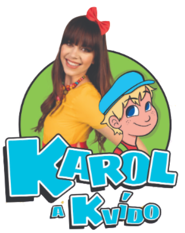

Do zahájení na Farské louce zbývá…

Jedno odpoledne, čtyři vystoupení, dobrá věc
Dozvuky prázdnin jsou rodinné odpoledne plné muziky pod širým nebem. Od zábavného programu pro děti až po večerní koncert — a výtěžek putuje na pomoc lidem v regionu prostřednictvím Charity Třeboň.
Program dne
Melodické české písně z alb Otevřená srdce a Kluci ze Šťastné planety.
Rodinné vstupné (1 500 Kč) a doprovodný program pro děti. Občerstvení k zakoupení na místě. Děti do 3 let zdarma.
Celý výnos z koncertu putuje na služby Charity Třeboň v našem regionu.
Od dětské show po večerní headliner — jeden den, spousta muziky.
Časté dotazy
V sobotu 12. září 2026 od 14:00 v areálu Farská louka, Zámecká 627, Lomnice nad Lužnicí.
Základní vstupné je od 450 Kč, rodinné vstupné (1+3 nebo 2+2) stojí 1 500 Kč. Vstupenky pořídíte v předprodeji na BOOM Events. Ve vstupném je koncert a program; jídlo a pití si hradíte na místě. Děti do 3 let mají vstup zdarma.
Odpolední program pro děti (14:00), dětská show Karol a Kvído (16:00), zpěvák František Zeman (18:00) a jihočeská folk-rocková kapela Epydemye (20:00). Více na stránce Interpreti.
Ano. Připraven je doprovodný program pro děti a rodinné vstupné. Občerstvení je k zakoupení přímo na místě. Děti do 3 let mají vstup zdarma.
Celý výtěžek z koncertu podpoří Charitu Třeboň a její sociální a zdravotní služby v regionu.
Areál Farská louka leží v centru Lomnice nad Lužnicí. Přijet lze autem i vlakem na trati Veselí nad Lužnicí – Třeboň. Podrobnosti najdete na stránce Místo & doprava.
Předprodej BOOM Events
Zajistěte si místo v předprodeji. K dispozici je i rodinné vstupné, děti do 3 let mají vstup zdarma.
Koupit vstupenky na BOOM Events →Akce se koná pod záštitou města Lomnice nad Lužnicí. Děkujeme panu starostovi Petru Krejníkovi a celému vedení města za dlouhodobou podporu a přízeň.